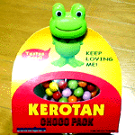
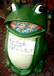

|
カエル美少女出演のカエル演劇！【佐賀発=神野公園のかえる同志記者】かえる展２にて出展いたしました『けろろん』につづき、新たにかえる小道具を製作いたしました。
しかも！そのかえる小道具が今週末の公演で使用されますです！ 前回の公演で味をしめたのか、脚本家がまた変えるネタを入れてくれたので意気揚々と小道具を作りました。結構かわいいシーンができていますよ。 劇団【Ziシアター】第１０回公演『花鳥風月 QUA CHAW FU: GETS』 会場 ：エスプラッツホール（佐賀市白山２丁目エスプラッツ３階） 公演日 ：2001年２月３日（土）< 19:00 > ２月４日（日）< 14:00 >（開場は３０分前） チケット：ローソンチケットにて好評発売中！！Ｌコード：87572（日にち指定なし・全席自由）前売券 1500円 ／ 当日券 1800円
公演は３、４日！カエルチケット入手を急げ！【全国かえる奉賛会】日本最大のカエル劇団の偉大なカエル脚本家に、カエル勲章を贈呈したいぞ。演劇を通じて不断の努力でカエルを訴えるというのは、国土のカエル化推進に大いに寄与するできごとであるーっ！！
九州はじめ西日本地域一帯のカエラーは、公演をみにゆこうではないかああああああ。そうして、今年のカエル展にも、カエル美少女連れて出演してくれえええええ。
 バレンタイン義理カエルチョコはこれだあ！【熊本発=のんたん同志記者】すでにご存知の方も多いかと思いますが・・・ケロタンチョコ！中身を食べ終わっても、顔の部分がクリップになっているので、いろんな所で大活躍です。しかも３８０円という安さ！もうすぐバレンタインですし、義理チョコにピッタリの価格ですよね!?
本命用カエルチョコを捜索中！ところで、私は平成12年2月13日号で話題になったカエルチョコを探しています。でも、未だ熊本で見つからないんです。一体どうすればＧＥＴ出来るのか？？？本命チョコに使いたいのでぜひ、教えて下さい！
@ @
(----) By. のんたん様の直筆署名
(( ))
~~ ~~
売り物カエルはゴミ捨て厳禁！ 【ハウステンボス発=すみちゃん様】ハウステンボスで見つけたカエルクンです。商品なのに…。ゴミ箱と間違えられているかわいそうなカエルくんです。口に「ゴミをすてないで！」と貼紙がはられてましたよ。お腹にも貼り紙があって「傘カバー等のごみを捨てないで。ゴミ箱ではありません。商品です」と書いてありました。一体、このカエルクン何に使うんだろう？？
【全国かえる奉賛会】口をあけて立っているからといって、ぽいぽいゴミを食べさせられてはたまったもんぢゃないよなー。カエルの口はゴミ入れじゃあないぞーっ。それにしても、このカエルを連れてかえった人は、どんな目的で使うんでしょうか。謎。
けろたま亭３周年でカエル画像が拡大！【日本発=けろたま亭みちや同志記者】このたびけろたま亭もめでたく３周年を迎えることができました。３周年ということで心機一転、ＨＰを改装しました。素材などが色々増えています。ぜひお越し下さい。これからもけろたま亭をよろしくお願いいたします。
【全国かえる奉賛会】ふふふふ。。実は大王は、けろたま亭の画像アイコンを愛用しているのである。特にお気に入りなのが、この方々なのです。もー最高ですー。３周年おめでとういございますー。
かえる陶芸作家の境沢さん作品展！【神奈川発=伊藤同志記者】かえる陶芸作家の境沢典子さんから作品展のお知らせが届きましたのでお知らせします（全て東京と神奈川です）。長崎諏訪神社にカエルみくじ！【長崎発=のぐち同志記者】福岡カエル展２にてポスターを購入したものです。長崎のカエル情報です！長崎には、ケロちゃんを乗せたカエル車があります。たまに、街も走っているようですが、実際走っているところは、わたしは見たことがありません。でも、駐車場にちょこんと、とまっています。それから、お正月限定で、諏訪神社でかえるのおみくじをうっております。その年によって色が違うかわいらしい陶器のかえるちゃん・・・・・。はらのなかに番号がかいてあって、それがおみくじになるようです。今年はとってもキュートなきみどりいろ！！たまりません！ カエル車画像の到着も待つ！【全国かえる奉賛会】大王一行は、２月３日に長崎ランタンフェスティバルにでかけて、カエルのランタンを捜索する予定にしているのですー。諏訪神社かえるみくじは、いいなーいってみようかな！カエル車も会えたらうれしい。ぜひぜひ、画像の到着を心待ちにしています。
投稿採用者に武功カエル徽章を授与！ |
かえる古新聞過去に取り上げた記事を見出し付きで一覧したい人は、ここをクリック◆創刊号を見る◆先週号を見る◆話題の号を見る◆かえる新聞の昔を読む◆COOL NET FROG RANKING !
|
私も入っています。。全国かえる奉賛会
大王様に会うには、このバナーをクリック。ずっと奥に写真館があるぞ。全国かえる奉賛会に入会するには、自分のホームページのどこかに、下の部分を追加するとバナーがリンク付きで表示されるぞ。どんどん入会しましょー |


|